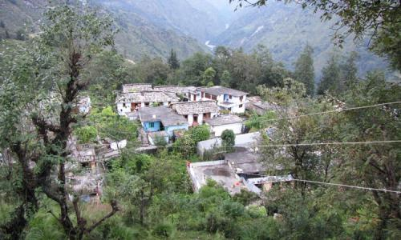
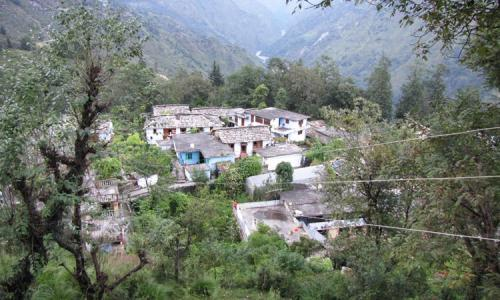
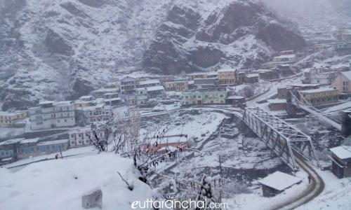
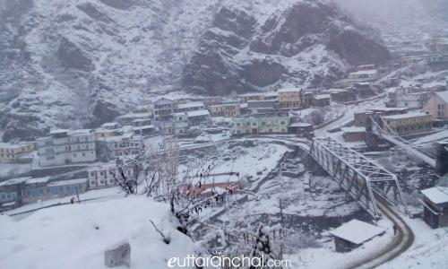
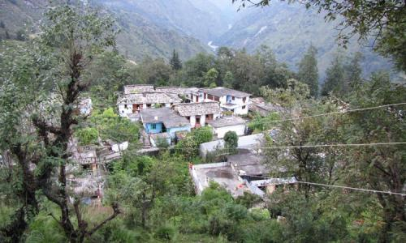
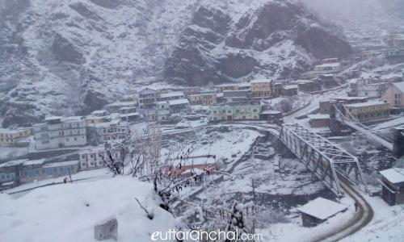

 



UTTARAKHAND VILLAGE SIGHTSEEING
As the eco-tourism is receiving widespread popularity, village tourism is also becoming an eco-friendly travel option for nature lovers and adventurers. Villages in Uttarakhand are known for is beautiful scenic settings and rustic lifestyle. There are many beautiful villages and hamlets peppered all over Uttarakhand.
Here are the list of village destinations in Uttarakhand...Take a look at the villages!


Perched at an altitude of 2250 mts and surrounded by majestic Himalayas, Agoda Village is a beautiful hamlet which lies en route the emerald lake of Dodital. Agoda Village is the first village that you’ll come across on Dodital Trek and an ideal halting point for people who wish to explore this scenic village and engage with the locals.
Bampa is a village situated in Joshimath Tehsil of district Chamoli of Uttarakhand state. It is situated 370 km from Dehradun ( capital of Uttarakhand state) 32 km towards east district headquarters. The famous Panchnaag temple is situated in Bampa Village.
Barsu village is situated in Uttarkashi district amidst scenic surroundings. It is the starting point of the trek to Dyara Bugyal.Its a small and scenic hamlet situated on road side in Uttarkashi district known for the base camp of Dayara Bugyal.
Darkot is a tiny hamlet idyllically situated on Madkot road, about 6 km from Munsiyari in Pithoragarh district of Uttarakhand.
Gamshali is the the second last village of the Niti valley, located 5 kms before the last village Niti. This is one of the largest and populated but during winters the inhabitants of this village migrate to villages like Chameli, Baunla, Semla and Math.
Harsil is an unspoiled and hidden jewel of Uttarakhand state offering ample scope for people seeking peace and serenity in the lap of Himalayas. It is situated on the banks of Bhagirathi River at an elevation of 2620 mts above sea level. This quaint hamlet has become popular in recent years among travel enthusiasts and nature lovers.
Situated at an elevation of 2,650 mts above sea level, Janki Chatti is familiarly known for its hot water springs. Janki Chatti encompasses the last village in the region and it acts as the major hub for the pilgrims traveling to Yamunotri.